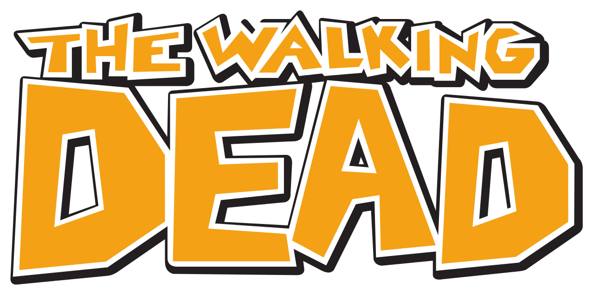
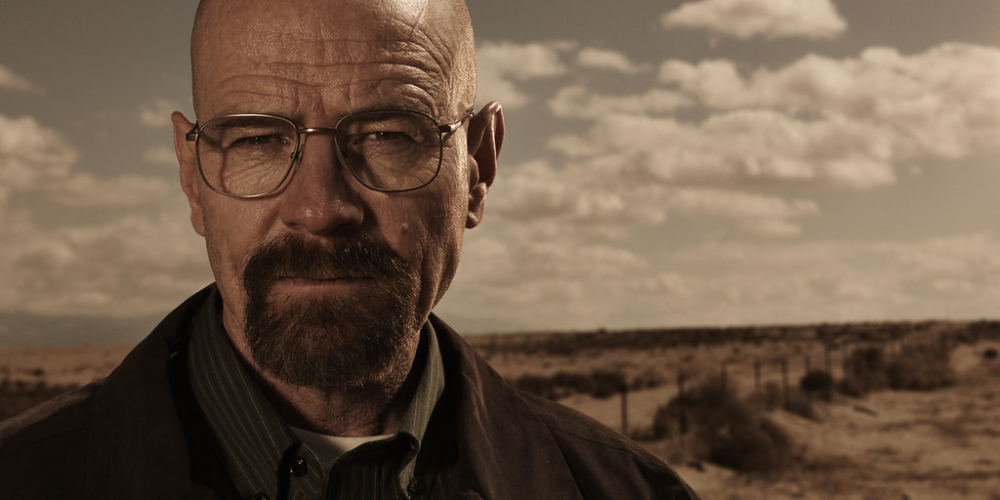
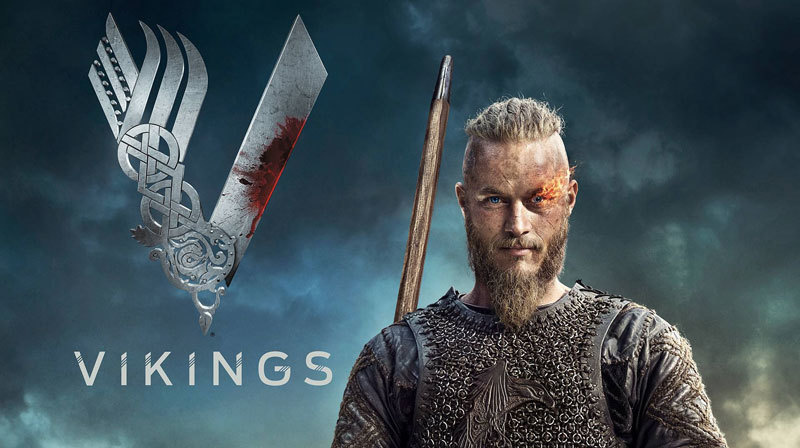
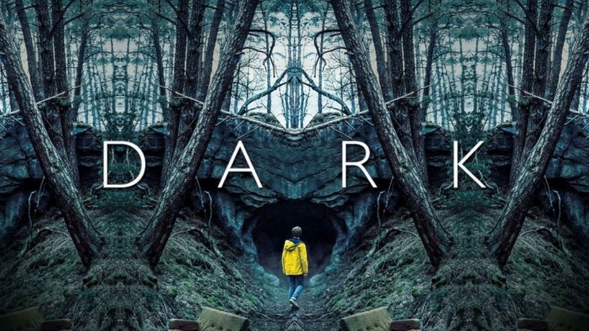
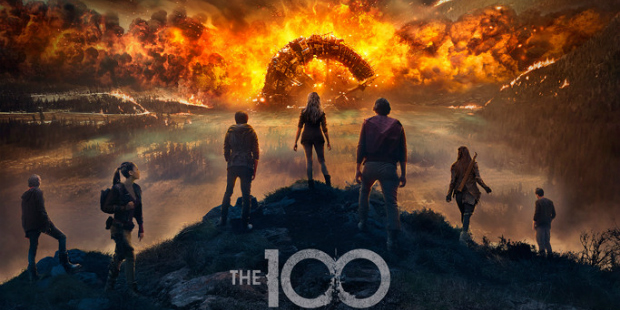
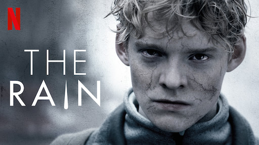
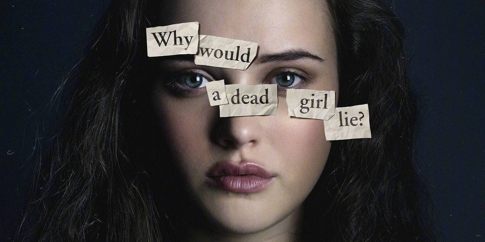
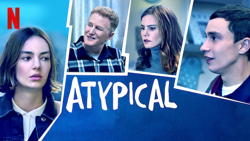
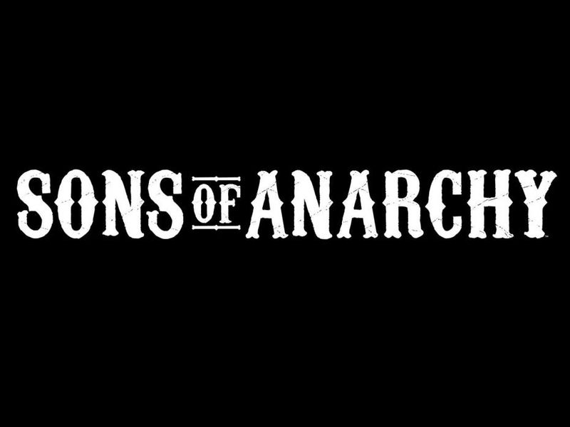

The Walking Dead
The Walking Dead es una serie de televisión creada y producida por Robert Kirkman y Frank Darabont, basada en el cómic homónimo de Robert Kirkman.
La serie se sitúa en un mundo postapocalíptico y está protagonizada por Rick Grimes (Andrew Lincoln), un oficial de policía que al despertar de un
coma se encuentra con que la civilización ha desaparecido debido a un inexplicable fenómeno que hace que las personas muertas se pongan en pie y ataquen
a las personas vivas, transformándolas a su vez en "caminantes muertos" (walking dead).
Al encontrar a su familia, Rick se une a un grupo de supervivientes convirtiéndose en su líder. La historia narra las vivencias de dicho grupo,
que debe enfrentarse tanto a los caminantes muertos, como a otros grupos de personas vivas que también luchan por subsistir e imponer su poder.

Breaking Bad
Breaking Bad narra la historia de Walter White (Bryan Cranston), un profesor de química con problemas económicos a
quien le diagnostican un cáncer de pulmón inoperable. Para pagar su tratamiento y asegurar el futuro económico de
su familia comienza a cocinar y vender metanfetamina,1 junto con Jesse Pinkman (Aaron Paul), un antiguo alumno suyo.
La serie, ambientada y producida en Albuquerque (Nuevo México), se caracteriza por poner a sus personajes en situaciones
que aparentemente no tienen salida, lo que llevó a que su creador la describa como un wéstern contemporáneo

Vikings
Vikings es una serie que está basada en las leyendas sobre el vikingo Ragnar Lodbrok, (Travis Fimmel) uno de los héroes más famosos
de la cultura nórdica que saqueó Northumbria, Francia y Bretaña. La serie retrata a Lodbrok como un guerrero curioso y navegante,
tecnológicamente innovador, ambicioso y rebelde, que hace construir un barco a su amigo Floki, para lanzarse a explorar los territorios
al oeste de Escandinavia desobedeciendo al jefe tribal, el Jarl (Conde) Haraldson, que ordena viajar hacia el este (orientación cardinal
en la que se especulaba con gran riqueza en aquella época).
sons of a anarchy

Dark
Dark es una serie de drama sobrenatural y ciencia ficción, creada por Baran bo Odar y Jantje Friese y distribuida por Netflix; se trata de la
primera serie original del mencionado servicio de streaming, hecha en Alemania
La serie narra la historia de 4 familias de Winden, un pequeño pueblo de Alemania. Las acciones principales suceden en el presente,
durante el año 2019, cuando la misteriosa desaparición de dos niños de la comunidad, así como otros incidentes peculiares, recuerdan
situaciones similares ocurridas en 1986. A partir de ahí, la serie se desarrollará en distintas épocas, siempre separadas entre sí por
ciclos de 33 años. Es a través de todos estos momentos que se irán descubriendo las incógnitas, y la relación y origen de los personajes
y de las circunstancias que desencadenaron toda la historia

The 100
Después de que ocurriese esa catastrófica guerra nuclear, se produjo una huida de los humanos que consiguieron sobrevivir.
El futuro de la supervivencia de la raza humana está en manos de unos jóvenes delincuentes que consiguieron huir y salvarse de la guerra.
Éstos viven desde entonces en una nave espacial. Desde la estación espacial The Ark, cien de los supervivientes son enviados de vuelta al
planeta tierra para investigarlo y poder estudiar las posibilidades que existen de volver a colonizar la tierra.

The Rain
Seis años después de que un virus terrible arrastrado por la lluvia aniquilase casi a todos los humanos en Escandinavia, dos hermanos daneses,
Simone y Rasmus, emergen de la seguridad de su búnker para encontrar los restos de la civilización caída. Pronto se unen a un grupo de
supervivientes jóvenes y juntos se embarcan en una aventura llena de peligros a través de la Escandinavia abandonada, en busca de cualquier
señal de vida. Liberados de su pasado colectivo y de las reglas sociales, el grupo tiene la libertad de ser quien quiere ser. En su lucha
por la supervivencia, descubren que incluso en un mundo post-apocalíptico todavía hay amor, celos, madurez y muchos de los problemas que
creían haber dejado atrás con la desaparición del mundo que conocieron

13 Reasons Why
El adolescente Clay Jensen (Dylan Minnette) vuelve un día a casa después del colegio y encuentra una misteriosa caja con su nombre.
Dentro descubre una cinta grabada por Hannah Baker (Katherine Langford), una compañera de clase por la que siente algo especial y que
se suicidó tan solo dos semanas atrás. En la cinta, Hannah cuenta que hay trece razones por las que ha decidido quitarse la vida.
¿Será Clay una de ellas? Si lo escucha, tendrá oportunidad de conocer cada motivo de su lista”.
Stranger Things
La historia arranca durante la década de los 80, en el pueblo ficticio de Hawkins, Indiana, cuando un niño llamado Will Byers desaparece,
hecho que destapa los extraños sucesos que tienen lugar en la zona, producto de una serie de experimentos que realiza el gobierno en un laboratorio
científico cercano. Además, en la ciudad aparecen fuerzas sobrenaturales inquietantes y una niña muy extraña. Ella, junto con los amigos de Will,
se encargará de buscarlo, sin imaginar lo que tendrán que enfrentar para encontrarlo. Inadvertidamente, crearon un portal a una dimensión alternativa
llamada "Upside Down" ("El Otro Lado"). La influencia de Upside Down comienza a afectar a los desconocidos residentes de Hawkins de manera calamitosa.

Atypical
Es la historia de Sam (Keir Gilchrist) un joven con autismo, y si bien es bastante inteligente y ya aprendió a controlar
su autismo y encontrar una forma saludable para interactuar con los demás, esta condición evita que viva una vida normal,
hasta que un día decide que quiere tener una novia, esto lo hace que busque experimentar esa parte de su vida que le había faltado.

Sons Of Anarchy
Es una serie de televisión estadounidense creada por Kurt Sutter sobre la vida en un club de moteros (MC) que opera ilegalmente en Charming,
un pueblo ficticio en el Norte de California. La serie se centra en la vida del protagonista Jackson "Jax" Teller (Charlie Hunnam),
un joven miembro con rango de vicepresidente que comienza a cuestionarse sus propios actos y los de su club.